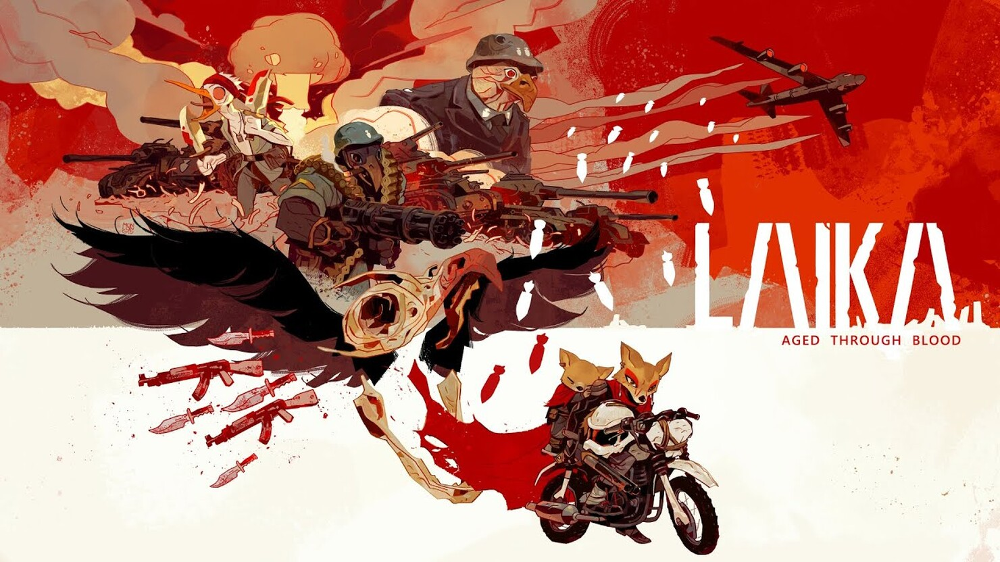

Laika: Aged Through Blood



Laika:
Aged
Through Blood -
это автопробег в западном стиле,
действие которого разворачивается
постапокалиптической пустоши.
Это история о племени, угнетенном оккупантами, и личная
история
матери-воительницы-койота, которая вступает
на бесконечный путь мести, чтобы вернуть то, что
потерял
ее народ.